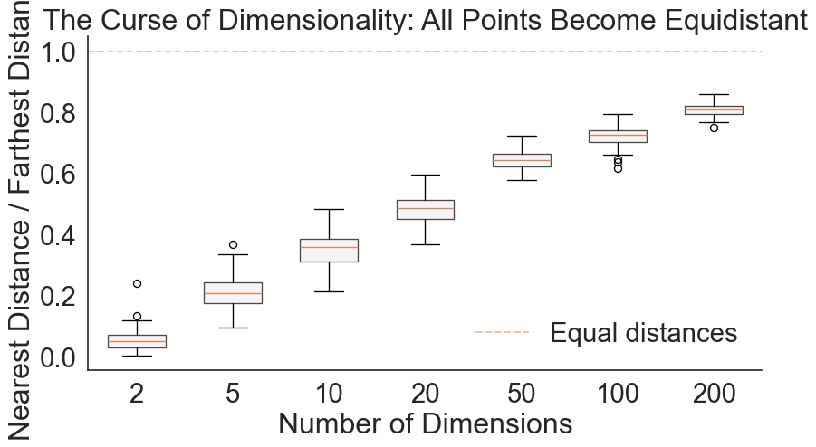
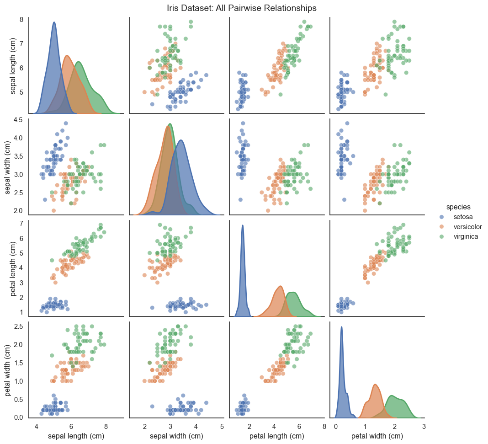
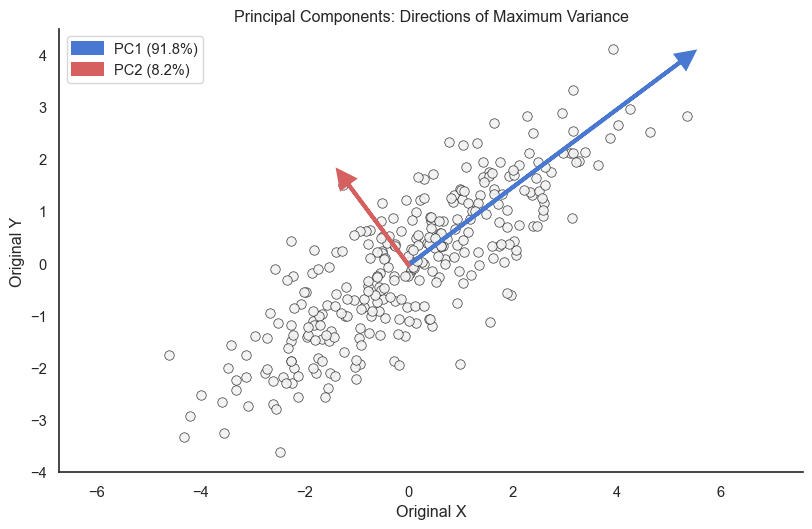
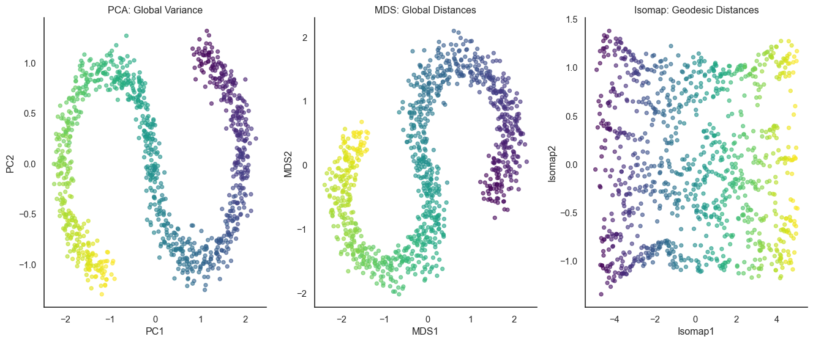
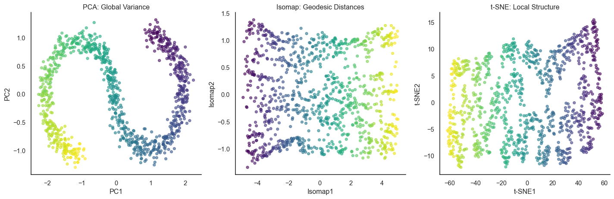

Imagine you’re analyzing data with 50 features per observation: gene expression levels, user behavior metrics, or environmental measurements. You want to understand the patterns in your data. How do different observations relate to each other? Are there clusters? Outliers?
You can’t plot 50 dimensions directly. Our visual system lives in three dimensions (or really, two dimensions on a screen). This creates a fundamental challenge: how do you visualize data that lives in spaces you cannot see?
The answer is dimensionality reduction—projecting high-dimensional data into 2 or 3 dimensions while preserving important structure. But here’s the critical question: what structure matters?
Different methods preserve different aspects of your data. Some preserve global structure (how groups relate to each other across the entire dataset). Others preserve local structure (which points are nearest neighbors). Understanding these trade-offs is essential for choosing the right method—and for not being misled by beautiful but misleading visualizations.
1 The Curse of Dimensionality
Before we dive into methods, we need to understand what makes high-dimensional data fundamentally different.
In high dimensions, everything is far from everything else. This sounds paradoxical, but it’s mathematically inevitable. As dimensions increase, the volume of space grows exponentially, and data points become increasingly sparse.
Consider this: in 1D, if you have 10 points uniformly distributed in [0, 1], the average distance between neighbors is about 0.1. To maintain the same density in 2D, you need 100 points. In 3D, you need 1,000 points. In 10D, you need 10 billion points.
Even stranger: in high dimensions, all distances become similar. The nearest and farthest neighbors become roughly equidistant. This makes many of our intuitions about “closeness” break down.
Code
import numpy as npimport matplotlib.pyplot as pltimport seaborn as snsimport pandas as pdfrom sklearn.metrics.pairwise import euclidean_distancessns.set_style("white")np.random.seed(42)# Calculate distance ratio across dimensionsdimensions = [2, 5, 10, 20, 50, 100, 200]n_samples =100ratios = []for d in dimensions:# Generate random data X = np.random.randn(n_samples, d)# Calculate all pairwise distances distances = euclidean_distances(X)# For each point, find nearest and farthest (excluding self) np.fill_diagonal(distances, np.inf) # Ignore self-distance nearest = distances.min(axis=1)# For "farthest," ignore inf (self-distance), so set inf entries to -1 and use argmax temp = distances.copy() temp[temp == np.inf] =-1# Now maximum is truly among finite values farthest = temp.max(axis=1)# Calculate ratio ratio = nearest / farthest ratios.append(ratio)# Plotsns.set(font_scale=2.0)sns.set_style("white")blue, red = sns.color_palette('muted', 2)fig, ax = plt.subplots(figsize=(10, 5))positions =range(len(dimensions))bp = ax.boxplot(ratios, positions=positions, widths=0.6, patch_artist=True, boxprops=dict(facecolor="#f2f2f2", alpha=0.7))ax.set_xticklabels(dimensions)ax.set_xlabel('Number of Dimensions')ax.set_ylabel('Nearest Distance / Farthest Distance')ax.set_title('The Curse of Dimensionality: All Points Become Equidistant')ax.axhline(y=1.0, color=red, linestyle='--', alpha=0.5, label='Equal distances')ax.legend(frameon=False)sns.despine()

As dimensions increase, the ratio of farthest to nearest distance approaches 1
In order words, dimensionality reduction is useful not just for visualization, but also for analysis. For example, when you want to cluster data points, every point is equidistant from every other point, so you can’t cluster them. By projecting the data into lower dimensions, you can remedy this curse of dimensionality.
2 Pairwise Scatter Plots: The Brute Force Approach
When you have a moderate number of dimensions (roughly 3-10), you can visualize all pairwise relationships using a scatter plot matrix (also called a pairs plot or SPLOM).
Text(0.5, 1.01, 'Iris Dataset: All Pairwise Relationships')
Scatter plot matrix showing all pairwise relationships in the Iris dataset

The scatter plot matrix shows every possible 2D projection. The diagonal shows the univariate distribution of each feature (using KDE here), and off-diagonals show bivariate scatter plots.
The problem: scatter plot matrices don’t scale. With 10 variables, you have 45 unique pairwise plots—manageable but crowded. With 20 variables, you have 190 plots—overwhelming. And you’re still only seeing 2D projections, never the full high-dimensional structure.
This is where dimensionality reduction becomes essential.
3 Linear Dimensionality Reduction: PCA
Principal Component Analysis (PCA) is a linear dimensionality reduction method that finds the directions of maximum variance in your data.
Imagine you have a cloud of points in high-dimensional space. PCA asks: “What direction captures the most variation in the data?” This becomes the first principal component (PC1). Then it asks: “What direction, perpendicular to the first, captures the most remaining variation?” This becomes PC2. And so on.
Mathematically, PCA finds the eigenvectors of the covariance matrix. But conceptually, it’s rotating your coordinate system to align with the the highest variance directions of your data.
Code
from sklearn.decomposition import PCA# Generate correlated 2D data (for visualization)np.random.seed(123)mean = [0, 0]cov = [[3, 2], [2, 2]]data_2d = np.random.multivariate_normal(mean, cov, 300)# Fit PCApca = PCA(n_components=2)pca.fit(data_2d)colors = ["#f2f2f2", sns.color_palette('muted')[0], sns.color_palette('muted')[3]]# Plot original data with principal componentsfig, ax = plt.subplots(figsize=(10, 6))ax.scatter(data_2d[:, 0], data_2d[:, 1], alpha=0.9, s=50, color=colors[0], edgecolors='k', linewidth=0.5)# Draw principal components as arrowsorigin = pca.mean_for i, (component, variance) inenumerate(zip(pca.components_, pca.explained_variance_)): direction = component * np.sqrt(variance) *3# Scale for visibility ax.arrow(origin[0], origin[1], direction[0], direction[1], head_width=0.3, head_length=0.3, fc=colors[i+1], ec=colors[i+1], linewidth=3, label=f'PC{i+1} ({variance/pca.explained_variance_.sum()*100:.1f}%)')ax.set_xlabel('Original X')ax.set_ylabel('Original Y')ax.set_title('Principal Components: Directions of Maximum Variance')ax.legend()ax.axis('equal')sns.despine()

PCA finds directions of maximum variance. PC1 captures the most variation, PC2 the next most (perpendicular to PC1).
PC1 (orange arrow) points along the direction of greatest spread. PC2 (green arrow) is perpendicular and captures the remaining variation.
The percentage in parentheses shows how much variance each component explains. If PC1 explains 90% of variance, then projecting onto just PC1 preserves most of your data’s structure.
3.1 Applying PCA to Iris
Let’s apply PCA to the 4-dimensional Iris dataset:
PCA projection of Iris dataset to 2D preserves the separation between species
PC1 and PC2 together explain over 95% of the variance in the 4D dataset. The 2D projection preserves the main structure: setosa is well-separated, while versicolor and virginica have some overlap.
Always standardize before PCA! If features have different units or scales, PCA will be dominated by high-variance features. Standardization (zero mean, unit variance) ensures all features contribute fairly.
4 Non-Linear Dimensionality Reduction
4.1 Multidimensional Scaling (MDS)
Multidimensional Scaling (MDS) takes a different approach: instead of finding directions of maximum variance, it tries to preserve distances between points.
You give MDS a distance matrix—the distance between every pair of points in high-dimensional space—and it finds a low-dimensional configuration where those distances are preserved as well as possible.
Think of it like arranging cities on a map. You know the distance between every pair of cities, but not their coordinates. MDS finds positions that preserve those distances.
Mathematically, MDS minimizes stress: the difference between high-dimensional distances and low-dimensional distances. Classical MDS has a closed-form solution (like PCA), but more flexible variants use iterative optimization.
MDS vs PCA on Iris dataset. MDS preserves distances better but looks similar to PCA for this dataset.
For the Iris dataset, PCA and MDS look very similar. This is because Iris data is fairly linear—the relationships between features don’t involve complex curves or non-linear structures.
4.2 Isomap
MDS preserves Euclidean distances—straight-line distances through space. But for curved manifolds, what matters is the geodesic distance: the distance along the surface.
Isomap (Isometric Mapping) addresses this by approximating geodesic distances using the neighborhood graph:
Build a neighborhood graph: Connect each point to its k nearest neighbors
Compute shortest paths: The geodesic distance between points is approximated by the shortest path through this graph
Apply classical MDS: Use MDS on these geodesic distances instead of Euclidean distances
Think of it like this: MDS measures distance “as the crow flies,” while Isomap measures distance “as you walk along the surface.”
Code
from sklearn.manifold import Isomapfrom sklearn.datasets import make_s_curve# Generate S-curve data (a 2D manifold embedded in 3D)n_samples =1000X_scurve, color = make_s_curve(n_samples, noise=0.1, random_state=42)# Apply Isomapisomap = Isomap(n_components=2, n_neighbors=10)X_scurve_isomap = isomap.fit_transform(X_scurve)# Apply PCApca = PCA(n_components=2)X_scurve_pca = pca.fit_transform(X_scurve)# Apply MDSmds = MDS(n_components=2, random_state=42, n_init=1)X_scurve_mds = mds.fit_transform(X_scurve)# Plot MDS vs Isomap vs PCAfig, axes = plt.subplots(1, 3, figsize=(14, 6))# PCAaxes[0].scatter(X_scurve_pca[:, 0], X_scurve_pca[:, 1], c=color, cmap='viridis', alpha=0.6, s=20)axes[0].set_xlabel('PC1')axes[0].set_ylabel('PC2')axes[0].set_title('PCA: Global Variance')sns.despine(ax=axes[0])# MDSaxes[1].scatter(X_scurve_mds[:, 0], X_scurve_mds[:, 1], c=color, cmap='viridis', alpha=0.6, s=20)axes[1].set_xlabel('MDS1')axes[1].set_ylabel('MDS2')axes[1].set_title('MDS: Global Distances')sns.despine(ax=axes[1])# Isomapaxes[2].scatter(X_scurve_isomap[:, 0], X_scurve_isomap[:, 1], c=color, cmap='viridis', alpha=0.6, s=20)axes[2].set_xlabel('Isomap1')axes[2].set_ylabel('Isomap2')axes[2].set_title('Isomap: Geodesic Distances')sns.despine(ax=axes[2])plt.tight_layout()

Isomap uses geodesic distances (along the surface) instead of Euclidean distances (through space), better recovering the S-curve structure
Isomap successfully “straightens” the S-curve because it respects the manifold structure. By computing distances along the neighborhood graph, it avoids the shortcuts across the bend that confused MDS.
4.3 t-SNE
t-SNE (t-Distributed Stochastic Neighbor Embedding) takes a middle ground between MDS’s global approach and Isomap’s geodesic approach: it prioritizes local structure while allowing some flexibility in global positioning.
The key insight: for visualization, we often care most about which points are neighbors. Whether distant clusters are placed left vs right, or how far apart they are, matters less than preserving the local neighborhood relationships within and between clusters.
t-SNE converts distances into similarity probabilities and preserves these local relationships:
In high dimensions: Define probability p_{ij} that point i picks point j as a neighbor (based on Gaussian distance)
In low dimensions: Define similar probability q_{ij} using a t-distribution with heavy tails
Optimize: Move points in 2D to make q_{ij} match p_{ij} (minimize KL divergence)
The t-distribution’s heavy tails are clever: they let well-separated clusters spread out in 2D without overlapping, while keeping local neighborhoods tight.
Code
from sklearn.manifold import TSNE# Apply t-SNEtsne = TSNE(n_components=2, random_state=42, perplexity=30)X_scurve_tsne = tsne.fit_transform(X_scurve)# Plot all three methodsfig, axes = plt.subplots(1, 3, figsize=(15, 5))# MDS - Global Euclidean distancesaxes[0].scatter(X_scurve_pca[:, 0], X_scurve_pca[:, 1], c=color, cmap='viridis', alpha=0.6, s=20)axes[0].set_xlabel('PC1')axes[0].set_ylabel('PC2')axes[0].set_title('PCA: Global Variance')sns.despine(ax=axes[0])# Isomap - Geodesic distancesaxes[1].scatter(X_scurve_isomap[:, 0], X_scurve_isomap[:, 1], c=color, cmap='viridis', alpha=0.6, s=20)axes[1].set_xlabel('Isomap1')axes[1].set_ylabel('Isomap2')axes[1].set_title('Isomap: Geodesic Distances')sns.despine(ax=axes[1])# t-SNE - Local neighborhoodsaxes[2].scatter(X_scurve_tsne[:, 0], X_scurve_tsne[:, 1], c=color, cmap='viridis', alpha=0.6, s=20)axes[2].set_xlabel('t-SNE1')axes[2].set_ylabel('t-SNE2')axes[2].set_title('t-SNE: Local Structure')sns.despine(ax=axes[2])plt.tight_layout()

Comparing global, geodesic, and local approaches on the S-curve
All three methods successfully straighten the S-curve, but through different philosophies: MDS compromises between all distances, Isomap follows the manifold globally, and t-SNE focuses on preserving neighborhoods.
Perplexity (typically 30-50) controls the effective neighborhood size. Too low fragments clusters; too high loses local detail.
t-SNE is powerful but has important limitations.
Don’t over-interpret t-SNE!
You cannot conclude from a t-SNE plot:
“Cluster A is twice as far from B as from C” (distances are not preserved)
“Cluster A is twice the size of B” (sizes are not preserved)
“The data has exactly 5 clusters” (apparent clusters may be visualization artifacts)
You can conclude:
“These points form a distinct group separate from others”
“These points are more similar to each other than to distant points”
“The data has local structure and is not uniformly random”
Let’s apply t-SNE to a more realistic high-dimensional dataset—the MNIST digits dataset, which has 784 dimensions (28�28 pixel images):
Code
from sklearn.datasets import load_digits# Load digits dataset (8x8 images, 64 dimensions - a smaller version of MNIST)digits = load_digits()X_digits = digits.datay_digits = digits.target# Take a subset for speed (t-SNE is slow on large datasets)np.random.seed(42)indices = np.random.choice(len(X_digits), size=1000, replace=False)X_subset = X_digits[indices]y_subset = y_digits[indices]# Apply t-SNEtsne_digits = TSNE(n_components=2, random_state=42, perplexity=40)X_digits_tsne = tsne_digits.fit_transform(X_subset)# Plotfig, ax = plt.subplots(figsize=(12, 10))scatter = ax.scatter(X_digits_tsne[:, 0], X_digits_tsne[:, 1], c=y_subset, cmap='tab10', alpha=0.7, s=30)ax.set_xlabel('t-SNE1')ax.set_ylabel('t-SNE2')ax.set_title('t-SNE Visualization of Handwritten Digits (64D � 2D)')cbar = plt.colorbar(scatter, ax=ax, ticks=range(10))cbar.set_label('Digit Class')sns.despine()
t-SNE visualization of MNIST digits (784 dimensions x 2D). Each color represents a digit class.
The t-SNE projection beautifully separates most digit classes. Digits that look similar (like 3, 5, and 8, or 4 and 9) cluster near each other, while visually distinct digits (like 0 and 1) are well separated.
This demonstrates t-SNE’s power: from 64 dimensions with no explicit information about what makes digits similar, t-SNE discovers the perceptual structure of handwritten digits.
t-SNE is stochastic: Different runs produce different layouts (though cluster structure remains consistent). Always check multiple runs with different random seeds, especially for important scientific conclusions.
4.4 UMAP
Uniform Manifold Approximation and Projection (UMAP) is a newer method (2018) that has become popular as an alternative to t-SNE. Like t-SNE, UMAP preserves local structure, but it’s based on different mathematical foundations (manifold learning and topological data analysis).
/Users/skojaku-admin/miniforge3/envs/advnetsci/lib/python3.11/site-packages/umap/umap_.py:1952: UserWarning: n_jobs value 1 overridden to 1 by setting random_state. Use no seed for parallelism.
warn(
UMAP vs t-SNE on digits dataset. UMAP often preserves more global structure while being much faster.
5 The Bigger Picture
Dimensionality reduction is not a one-size-fits-all solution. Different methods make different trade-offs:
Method
Preserves
Speed
Scalability
When to use
Scatter plot matrix
Everything (2D projections)
Fast
3-10 dimensions
Exploring moderate-dimensional data
PCA
Global variance
Very fast
Excellent (1000s of dims)
Linear structure, interpretability needed
MDS
All distances
Slow
Poor (100s of points)
Distance preservation critical
t-SNE
Local structure
Slow
Moderate (10,000s of points)
Revealing clusters, local relationships
UMAP
Local + some global
Fast
Excellent (millions of points)
Large datasets, faster alternative to t-SNE
Beware of visualization artifacts
Dimensionality reduction can create apparent patterns that don’t exist in the original data:
Spurious clusters: t-SNE can split continuous data into false clusters
Missing relationships: Two clusters might be connected in high dimensions but appear separated in 2D
Misleading distances: Distance and size in t-SNE/UMAP are not meaningful
Always validate important findings with statistical tests or domain knowledge. A beautiful t-SNE plot is a starting point for investigation, not a final conclusion.
Visualizing high-dimensional data is as much art as science. The goal is not to find “the true projection”—there is no single true way to flatten high-dimensional space onto a page. The goal is to reveal structure that helps you understand your data and ask better questions.
Source Code
---title: "High-Dimensional Data Visualization"jupyter: advnetsciexecute: enabled: true---Imagine you're analyzing data with 50 features per observation: gene expression levels, user behavior metrics, or environmental measurements. You want to understand the patterns in your data. How do different observations relate to each other? Are there clusters? Outliers?You can't plot 50 dimensions directly. Our visual system lives in three dimensions (or really, two dimensions on a screen). This creates a fundamental challenge: **how do you visualize data that lives in spaces you cannot see?**The answer is dimensionality reduction---projecting high-dimensional data into 2 or 3 dimensions while preserving important structure. But here's the critical question: **what structure matters?**Different methods preserve different aspects of your data. Some preserve global structure (how groups relate to each other across the entire dataset). Others preserve local structure (which points are nearest neighbors). Understanding these trade-offs is essential for choosing the right method---and for not being misled by beautiful but misleading visualizations.# The Curse of DimensionalityBefore we dive into methods, we need to understand what makes high-dimensional data fundamentally different.In high dimensions, **everything is far from everything else**. This sounds paradoxical, but it's mathematically inevitable. As dimensions increase, the volume of space grows exponentially, and data points become increasingly sparse.Consider this: in 1D, if you have 10 points uniformly distributed in [0, 1], the average distance between neighbors is about 0.1. To maintain the same density in 2D, you need 100 points. In 3D, you need 1,000 points. In 10D, you need 10 billion points.Even stranger: in high dimensions, **all distances become similar**. The nearest and farthest neighbors become roughly equidistant. This makes many of our intuitions about "closeness" break down.```{python}#| fig-cap: "As dimensions increase, the ratio of farthest to nearest distance approaches 1"#| fig-width: 10#| fig-height: 5#| code-fold: trueimport numpy as npimport matplotlib.pyplot as pltimport seaborn as snsimport pandas as pdfrom sklearn.metrics.pairwise import euclidean_distancessns.set_style("white")np.random.seed(42)# Calculate distance ratio across dimensionsdimensions = [2, 5, 10, 20, 50, 100, 200]n_samples =100ratios = []for d in dimensions:# Generate random data X = np.random.randn(n_samples, d)# Calculate all pairwise distances distances = euclidean_distances(X)# For each point, find nearest and farthest (excluding self) np.fill_diagonal(distances, np.inf) # Ignore self-distance nearest = distances.min(axis=1)# For "farthest," ignore inf (self-distance), so set inf entries to -1 and use argmax temp = distances.copy() temp[temp == np.inf] =-1# Now maximum is truly among finite values farthest = temp.max(axis=1)# Calculate ratio ratio = nearest / farthest ratios.append(ratio)# Plotsns.set(font_scale=2.0)sns.set_style("white")blue, red = sns.color_palette('muted', 2)fig, ax = plt.subplots(figsize=(10, 5))positions =range(len(dimensions))bp = ax.boxplot(ratios, positions=positions, widths=0.6, patch_artist=True, boxprops=dict(facecolor="#f2f2f2", alpha=0.7))ax.set_xticklabels(dimensions)ax.set_xlabel('Number of Dimensions')ax.set_ylabel('Nearest Distance / Farthest Distance')ax.set_title('The Curse of Dimensionality: All Points Become Equidistant')ax.axhline(y=1.0, color=red, linestyle='--', alpha=0.5, label='Equal distances')ax.legend(frameon=False)sns.despine()```In order words, dimensionality reduction is useful not just for visualization, but also for analysis. For example, when you want to cluster data points, every point is equidistant from every other point, so you can't cluster them. By projecting the data into lower dimensions, you can remedy this curse of dimensionality.# Pairwise Scatter Plots: The Brute Force ApproachWhen you have a **moderate number of dimensions** (roughly 3-10), you can visualize all pairwise relationships using a **scatter plot matrix** (also called a pairs plot or SPLOM).```{python}#| fig-cap: "Scatter plot matrix showing all pairwise relationships in the Iris dataset"#| fig-width: 14#| fig-height: 14#| code-fold: true# Load classic iris dataset (4 dimensions)from sklearn.datasets import load_irissns.set(font_scale=1.0)sns.set_style("white")iris = load_iris()iris_df = pd.DataFrame(iris.data, columns=iris.feature_names)iris_df['species'] = iris.targetiris_df['species'] = iris_df['species'].map({0: 'setosa', 1: 'versicolor', 2: 'virginica'})# Create pairplotg = sns.pairplot(iris_df, hue='species', diag_kind='kde', plot_kws={'alpha': 0.6, 's': 50, 'edgecolor': 'white', 'linewidth': 0.5}, diag_kws={'alpha': 0.7, 'linewidth': 2})g.fig.suptitle('Iris Dataset: All Pairwise Relationships', y=1.01)```The scatter plot matrix shows every possible 2D projection. The diagonal shows the univariate distribution of each feature (using KDE here), and off-diagonals show bivariate scatter plots.The problem: scatter plot matrices don't scale. With 10 variables, you have 45 unique pairwise plots---manageable but crowded. With 20 variables, you have 190 plots---overwhelming. And you're still only seeing 2D projections, never the full high-dimensional structure.This is where dimensionality reduction becomes essential.# Linear Dimensionality Reduction: PCA**Principal Component Analysis (PCA)** is a linear dimensionality reduction method that finds the directions of maximum variance in your data.Imagine you have a cloud of points in high-dimensional space. PCA asks: "What direction captures the most variation in the data?" This becomes the first principal component (PC1). Then it asks: "What direction, perpendicular to the first, captures the most remaining variation?" This becomes PC2. And so on.Mathematically, PCA finds the eigenvectors of the covariance matrix. But conceptually, it's rotating your coordinate system to align with the the highest variance directions of your data.```{python}#| fig-cap: "PCA finds directions of maximum variance. PC1 captures the most variation, PC2 the next most (perpendicular to PC1)."#| fig-width: 10#| fig-height: 6#| code-fold: truefrom sklearn.decomposition import PCA# Generate correlated 2D data (for visualization)np.random.seed(123)mean = [0, 0]cov = [[3, 2], [2, 2]]data_2d = np.random.multivariate_normal(mean, cov, 300)# Fit PCApca = PCA(n_components=2)pca.fit(data_2d)colors = ["#f2f2f2", sns.color_palette('muted')[0], sns.color_palette('muted')[3]]# Plot original data with principal componentsfig, ax = plt.subplots(figsize=(10, 6))ax.scatter(data_2d[:, 0], data_2d[:, 1], alpha=0.9, s=50, color=colors[0], edgecolors='k', linewidth=0.5)# Draw principal components as arrowsorigin = pca.mean_for i, (component, variance) inenumerate(zip(pca.components_, pca.explained_variance_)): direction = component * np.sqrt(variance) *3# Scale for visibility ax.arrow(origin[0], origin[1], direction[0], direction[1], head_width=0.3, head_length=0.3, fc=colors[i+1], ec=colors[i+1], linewidth=3, label=f'PC{i+1} ({variance/pca.explained_variance_.sum()*100:.1f}%)')ax.set_xlabel('Original X')ax.set_ylabel('Original Y')ax.set_title('Principal Components: Directions of Maximum Variance')ax.legend()ax.axis('equal')sns.despine()```PC1 (orange arrow) points along the direction of greatest spread. PC2 (green arrow) is perpendicular and captures the remaining variation.The percentage in parentheses shows how much variance each component explains. If PC1 explains 90% of variance, then projecting onto just PC1 preserves most of your data's structure.## Applying PCA to IrisLet's apply PCA to the 4-dimensional Iris dataset:```{python}#| fig-cap: "PCA projection of Iris dataset to 2D preserves the separation between species"#| fig-width: 14#| fig-height: 6#| code-fold: true# Prepare dataX = iris.datay = iris.target# Standardize (important for PCA!)from sklearn.preprocessing import StandardScalerscaler = StandardScaler()X_scaled = scaler.fit_transform(X)# Apply PCApca = PCA(n_components=2)X_pca = pca.fit_transform(X_scaled)# Create DataFrame for plottingpca_df = pd.DataFrame(X_pca, columns=['PC1', 'PC2'])pca_df['species'] = iris.target_names[y]# Plotfig, axes = plt.subplots(1, 2, figsize=(14, 6))# Left: PCA projectionfor species, color inzip(['setosa', 'versicolor', 'virginica'], sns.color_palette('muted', 3)): mask = pca_df['species'] == species axes[0].scatter(pca_df.loc[mask, 'PC1'], pca_df.loc[mask, 'PC2'], label=species, alpha=0.7, s=50, color=color, edgecolors='white', linewidth=0.5)axes[0].set_xlabel(f'PC1 ({pca.explained_variance_ratio_[0]*100:.1f}% variance)')axes[0].set_ylabel(f'PC2 ({pca.explained_variance_ratio_[1]*100:.1f}% variance)')axes[0].set_title('PCA Projection of Iris Dataset')axes[0].legend()sns.despine(ax=axes[0])# Right: Variance explainedvariances = pca.explained_variance_ratio_axes[1].bar([1, 2], variances, color=sns.color_palette('muted', 2), alpha=0.7)axes[1].set_xlabel('Principal Component')axes[1].set_ylabel('Variance Explained')axes[1].set_title('Variance Explained by Each Component')axes[1].set_xticks([1, 2])axes[1].set_xticklabels(['PC1', 'PC2'])for i, v inenumerate(variances): axes[1].text(i+1, v+0.01, f'{v*100:.1f}%', ha='center', va='bottom', fontsize=11)sns.despine(ax=axes[1])plt.tight_layout()```PC1 and PC2 together explain over 95% of the variance in the 4D dataset. The 2D projection preserves the main structure: setosa is well-separated, while versicolor and virginica have some overlap.::: {.column-margin}**Always standardize before PCA!** If features have different units or scales, PCA will be dominated by high-variance features. Standardization (zero mean, unit variance) ensures all features contribute fairly.:::# Non-Linear Dimensionality Reduction## Multidimensional Scaling (MDS)**Multidimensional Scaling (MDS)** takes a different approach: instead of finding directions of maximum variance, it tries to **preserve distances between points**.You give MDS a distance matrix---the distance between every pair of points in high-dimensional space---and it finds a low-dimensional configuration where those distances are preserved as well as possible.Think of it like arranging cities on a map. You know the distance between every pair of cities, but not their coordinates. MDS finds positions that preserve those distances.Mathematically, MDS minimizes **stress**: the difference between high-dimensional distances and low-dimensional distances. Classical MDS has a closed-form solution (like PCA), but more flexible variants use iterative optimization.```{python}#| fig-cap: "MDS vs PCA on Iris dataset. MDS preserves distances better but looks similar to PCA for this dataset."#| fig-width: 14#| fig-height: 6#| code-fold: truefrom sklearn.manifold import MDS# Suppress FutureWarning about n_init in MDSimport warningsmds = MDS(n_components=2, random_state=42, n_init=1)X_mds = mds.fit_transform(X_scaled)# Apply PCApca = PCA(n_components=2)X_pca = pca.fit_transform(X_scaled)# Create DataFramemds_df = pd.DataFrame(X_mds, columns=['MDS1', 'MDS2'])mds_df['species'] = iris.target_names[y]# Plot bothfig, axes = plt.subplots(1, 2, figsize=(14, 6))# PCAfor species, color inzip(['setosa', 'versicolor', 'virginica'], sns.color_palette('muted', 3)): mask = pca_df['species'] == species axes[0].scatter(pca_df.loc[mask, 'PC1'], pca_df.loc[mask, 'PC2'], label=species, alpha=0.7, s=50, color=color, edgecolors='white', linewidth=0.5)axes[0].set_xlabel('PC1')axes[0].set_ylabel('PC2')axes[0].set_title('PCA: Maximizes Variance')axes[0].legend()sns.despine(ax=axes[0])# MDSfor species, color inzip(['setosa', 'versicolor', 'virginica'], sns.color_palette('muted', 3)): mask = mds_df['species'] == species axes[1].scatter(mds_df.loc[mask, 'MDS1'], mds_df.loc[mask, 'MDS2'], label=species, alpha=0.7, s=50, color=color, edgecolors='white', linewidth=0.5)axes[1].set_xlabel('MDS1')axes[1].set_ylabel('MDS2')axes[1].set_title('MDS: Preserves Distances')axes[1].legend()sns.despine(ax=axes[1])plt.tight_layout()```For the Iris dataset, PCA and MDS look very similar. This is because Iris data is fairly linear---the relationships between features don't involve complex curves or non-linear structures.## IsomapMDS preserves Euclidean distances---straight-line distances through space. But for curved manifolds, what matters is the **geodesic distance**: the distance along the surface.**Isomap** (Isometric Mapping) addresses this by approximating geodesic distances using the neighborhood graph:1. **Build a neighborhood graph**: Connect each point to its k nearest neighbors2. **Compute shortest paths**: The geodesic distance between points is approximated by the shortest path through this graph3. **Apply classical MDS**: Use MDS on these geodesic distances instead of Euclidean distancesThink of it like this: MDS measures distance "as the crow flies," while Isomap measures distance "as you walk along the surface."```{python}#| fig-cap: "Isomap uses geodesic distances (along the surface) instead of Euclidean distances (through space), better recovering the S-curve structure"#| fig-width: 14#| fig-height: 6#| code-fold: truefrom sklearn.manifold import Isomapfrom sklearn.datasets import make_s_curve# Generate S-curve data (a 2D manifold embedded in 3D)n_samples =1000X_scurve, color = make_s_curve(n_samples, noise=0.1, random_state=42)# Apply Isomapisomap = Isomap(n_components=2, n_neighbors=10)X_scurve_isomap = isomap.fit_transform(X_scurve)# Apply PCApca = PCA(n_components=2)X_scurve_pca = pca.fit_transform(X_scurve)# Apply MDSmds = MDS(n_components=2, random_state=42, n_init=1)X_scurve_mds = mds.fit_transform(X_scurve)# Plot MDS vs Isomap vs PCAfig, axes = plt.subplots(1, 3, figsize=(14, 6))# PCAaxes[0].scatter(X_scurve_pca[:, 0], X_scurve_pca[:, 1], c=color, cmap='viridis', alpha=0.6, s=20)axes[0].set_xlabel('PC1')axes[0].set_ylabel('PC2')axes[0].set_title('PCA: Global Variance')sns.despine(ax=axes[0])# MDSaxes[1].scatter(X_scurve_mds[:, 0], X_scurve_mds[:, 1], c=color, cmap='viridis', alpha=0.6, s=20)axes[1].set_xlabel('MDS1')axes[1].set_ylabel('MDS2')axes[1].set_title('MDS: Global Distances')sns.despine(ax=axes[1])# Isomapaxes[2].scatter(X_scurve_isomap[:, 0], X_scurve_isomap[:, 1], c=color, cmap='viridis', alpha=0.6, s=20)axes[2].set_xlabel('Isomap1')axes[2].set_ylabel('Isomap2')axes[2].set_title('Isomap: Geodesic Distances')sns.despine(ax=axes[2])plt.tight_layout()```Isomap successfully "straightens" the S-curve because it respects the manifold structure. By computing distances along the neighborhood graph, it avoids the shortcuts across the bend that confused MDS.## t-SNE**t-SNE** (t-Distributed Stochastic Neighbor Embedding) takes a middle ground between MDS's global approach and Isomap's geodesic approach: it **prioritizes local structure** while allowing some flexibility in global positioning.The key insight: for visualization, we often care most about **which points are neighbors**. Whether distant clusters are placed left vs right, or how far apart they are, matters less than preserving the local neighborhood relationships within and between clusters.t-SNE converts distances into similarity probabilities and preserves these local relationships:1. **In high dimensions**: Define probability $p_{ij}$ that point $i$ picks point $j$ as a neighbor (based on Gaussian distance)2. **In low dimensions**: Define similar probability $q_{ij}$ using a t-distribution with heavy tails3. **Optimize**: Move points in 2D to make $q_{ij}$ match $p_{ij}$ (minimize KL divergence)The t-distribution's heavy tails are clever: they let well-separated clusters spread out in 2D without overlapping, while keeping local neighborhoods tight.```{python}#| fig-cap: "Comparing global, geodesic, and local approaches on the S-curve"#| fig-width: 15#| fig-height: 5#| code-fold: truefrom sklearn.manifold import TSNE# Apply t-SNEtsne = TSNE(n_components=2, random_state=42, perplexity=30)X_scurve_tsne = tsne.fit_transform(X_scurve)# Plot all three methodsfig, axes = plt.subplots(1, 3, figsize=(15, 5))# MDS - Global Euclidean distancesaxes[0].scatter(X_scurve_pca[:, 0], X_scurve_pca[:, 1], c=color, cmap='viridis', alpha=0.6, s=20)axes[0].set_xlabel('PC1')axes[0].set_ylabel('PC2')axes[0].set_title('PCA: Global Variance')sns.despine(ax=axes[0])# Isomap - Geodesic distancesaxes[1].scatter(X_scurve_isomap[:, 0], X_scurve_isomap[:, 1], c=color, cmap='viridis', alpha=0.6, s=20)axes[1].set_xlabel('Isomap1')axes[1].set_ylabel('Isomap2')axes[1].set_title('Isomap: Geodesic Distances')sns.despine(ax=axes[1])# t-SNE - Local neighborhoodsaxes[2].scatter(X_scurve_tsne[:, 0], X_scurve_tsne[:, 1], c=color, cmap='viridis', alpha=0.6, s=20)axes[2].set_xlabel('t-SNE1')axes[2].set_ylabel('t-SNE2')axes[2].set_title('t-SNE: Local Structure')sns.despine(ax=axes[2])plt.tight_layout()```All three methods successfully straighten the S-curve, but through different philosophies: MDS compromises between all distances, Isomap follows the manifold globally, and t-SNE focuses on preserving neighborhoods.**Perplexity** (typically 30-50) controls the effective neighborhood size. Too low fragments clusters; too high loses local detail.t-SNE is powerful but has important limitations.::: {.callout-warning}## Don't over-interpret t-SNE!**You cannot conclude** from a t-SNE plot:- "Cluster A is twice as far from B as from C" (distances are not preserved)- "Cluster A is twice the size of B" (sizes are not preserved)- "The data has exactly 5 clusters" (apparent clusters may be visualization artifacts)**You can conclude:**- "These points form a distinct group separate from others"- "These points are more similar to each other than to distant points"- "The data has local structure and is not uniformly random":::Let's apply t-SNE to a more realistic high-dimensional dataset---the MNIST digits dataset, which has 784 dimensions (28�28 pixel images):```{python}#| fig-cap: "t-SNE visualization of MNIST digits (784 dimensions x 2D). Each color represents a digit class."#| fig-width: 12#| fig-height: 10#| code-fold: truefrom sklearn.datasets import load_digits# Load digits dataset (8x8 images, 64 dimensions - a smaller version of MNIST)digits = load_digits()X_digits = digits.datay_digits = digits.target# Take a subset for speed (t-SNE is slow on large datasets)np.random.seed(42)indices = np.random.choice(len(X_digits), size=1000, replace=False)X_subset = X_digits[indices]y_subset = y_digits[indices]# Apply t-SNEtsne_digits = TSNE(n_components=2, random_state=42, perplexity=40)X_digits_tsne = tsne_digits.fit_transform(X_subset)# Plotfig, ax = plt.subplots(figsize=(12, 10))scatter = ax.scatter(X_digits_tsne[:, 0], X_digits_tsne[:, 1], c=y_subset, cmap='tab10', alpha=0.7, s=30)ax.set_xlabel('t-SNE1')ax.set_ylabel('t-SNE2')ax.set_title('t-SNE Visualization of Handwritten Digits (64D � 2D)')cbar = plt.colorbar(scatter, ax=ax, ticks=range(10))cbar.set_label('Digit Class')sns.despine()```The t-SNE projection beautifully separates most digit classes. Digits that look similar (like 3, 5, and 8, or 4 and 9) cluster near each other, while visually distinct digits (like 0 and 1) are well separated.This demonstrates t-SNE's power: from 64 dimensions with no explicit information about what makes digits similar, t-SNE discovers the perceptual structure of handwritten digits.::: {.column-margin}**t-SNE is stochastic**: Different runs produce different layouts (though cluster structure remains consistent). Always check multiple runs with different random seeds, especially for important scientific conclusions.:::## UMAP**Uniform Manifold Approximation and Projection (UMAP)** is a newer method (2018) that has become popular as an alternative to t-SNE. Like t-SNE, UMAP preserves local structure, but it's based on different mathematical foundations (manifold learning and topological data analysis).```{python}#| fig-cap: "UMAP vs t-SNE on digits dataset. UMAP often preserves more global structure while being much faster."#| fig-width: 14#| fig-height: 6#| code-fold: trueimport umap# Apply UMAPumap_model = umap.UMAP(n_components=2, random_state=42, n_neighbors=30)X_digits_umap = umap_model.fit_transform(X_subset)# Plot comparisonfig, axes = plt.subplots(1, 2, figsize=(14, 6))# t-SNEscatter = axes[0].scatter(X_digits_tsne[:, 0], X_digits_tsne[:, 1], c=y_subset, cmap='tab10', alpha=0.7, s=30)axes[0].set_xlabel('t-SNE1')axes[0].set_ylabel('t-SNE2')axes[0].set_title('t-SNE')sns.despine(ax=axes[0])# UMAPscatter = axes[1].scatter(X_digits_umap[:, 0], X_digits_umap[:, 1], c=y_subset, cmap='tab10', alpha=0.7, s=30)axes[1].set_xlabel('UMAP1')axes[1].set_ylabel('UMAP2')axes[1].set_title('UMAP')cbar = plt.colorbar(scatter, ax=axes[1], ticks=range(10))cbar.set_label('Digit Class')sns.despine(ax=axes[1])plt.tight_layout()```# The Bigger PictureDimensionality reduction is not a one-size-fits-all solution. Different methods make different trade-offs:| Method | Preserves | Speed | Scalability | When to use ||--------|-----------|-------|-------------|-------------|| **Scatter plot matrix** | Everything (2D projections) | Fast | 3-10 dimensions | Exploring moderate-dimensional data || **PCA** | Global variance | Very fast | Excellent (1000s of dims) | Linear structure, interpretability needed || **MDS** | All distances | Slow | Poor (100s of points) | Distance preservation critical || **t-SNE** | Local structure | Slow | Moderate (10,000s of points) | Revealing clusters, local relationships || **UMAP** | Local + some global | Fast | Excellent (millions of points) | Large datasets, faster alternative to t-SNE |::: {.callout-important}## Beware of visualization artifactsDimensionality reduction can create apparent patterns that don't exist in the original data:- **Spurious clusters**: t-SNE can split continuous data into false clusters- **Missing relationships**: Two clusters might be connected in high dimensions but appear separated in 2D- **Misleading distances**: Distance and size in t-SNE/UMAP are not meaningful**Always validate** important findings with statistical tests or domain knowledge. A beautiful t-SNE plot is a starting point for investigation, not a final conclusion.:::Visualizing high-dimensional data is as much art as science. The goal is not to find "the true projection"---there is no single true way to flatten high-dimensional space onto a page. The goal is to **reveal structure that helps you understand your data and ask better questions**.